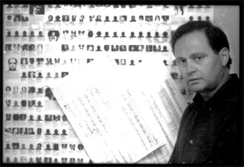

| 
In The Weeds
Of Dialectics
They do
not teach you in school, that with a name like mine ( and the independence
of mind to match the name) that I could have ever become, let's
say a John Adams ( and I am not talking about style) or if I was
living in Germany a Wolfgang Rhim. No Cultural attache was looking
out for such a name.
I paid my dues, but I refused to melt, that was the first thing
to happen to me. My life became a series of refusals. For years
I lived on 11 or 13 thousand dollars a year. I did not really plan
it that way. I could not even join the eccentric tradition of Partch
or Nancarrow because I was like Varese in reverse and by that I
mean rootless in my unmeltability. Actually for ten years I was
like a little Albert Schweitzer in reverse( studying the white culture
in the heartland's prisons).
The Germans flattered me: "America you are a better place", but
I just saw that as more jostling hegemony between the big grid imposing
predators of Western Civilization. Acutally there was no category
for me that was officially recognized in the American experience
at the time. To be sure I was not alone; I either was indexed under
the Italian-American tradition and ignored or I fell into the great
wash of the marginals, in the shadow of the silent majorities at
the interstices of American life.
Later this
would become a great lesson for me. Living in the states with few
opportunities for advanced music, I was unable to become what I
wanted to be. Instead I was forced to become what I am. It was yet
another reversal to which I owed this Nietzschean lesson, " become
who you are". Only after I died and lost music, after I traveled
across disciplines on the path of the creative life, did I arrive
at the crossroads of rediscovery. A musician without notes, undergoing
a series of spiritual crisises, I survived myself, and the music
came back.
The model was Bataille,
a librarian whose work was unclassifiable. I became a social worker
who rediscovered music, if not what some have called a social composer.
That is when I realized that 'style' is determined by what you cannot
play , or even refuse to play, in a complex web of reversals and
refusals. Style would grow like life does, as weeds in between dialectics.
Rocco Di
Pietro
|
Other Writings | Musician Without Notes
| My Dinner With Afasia | Anoxia
| Ipsiety |
| Glass Case Of The Heart's Fragility | The Wine, Music and Prison
| Hello Buffalo | Waiting |
| Commentaries On Trance | Alternating Desire | Preface To Boulez
Dialogues |
| Prisions Panels In Sond | On Jokes and Humor In Music | Maderna's
"Ages" |
| Waiting Alone Gives Attention | |